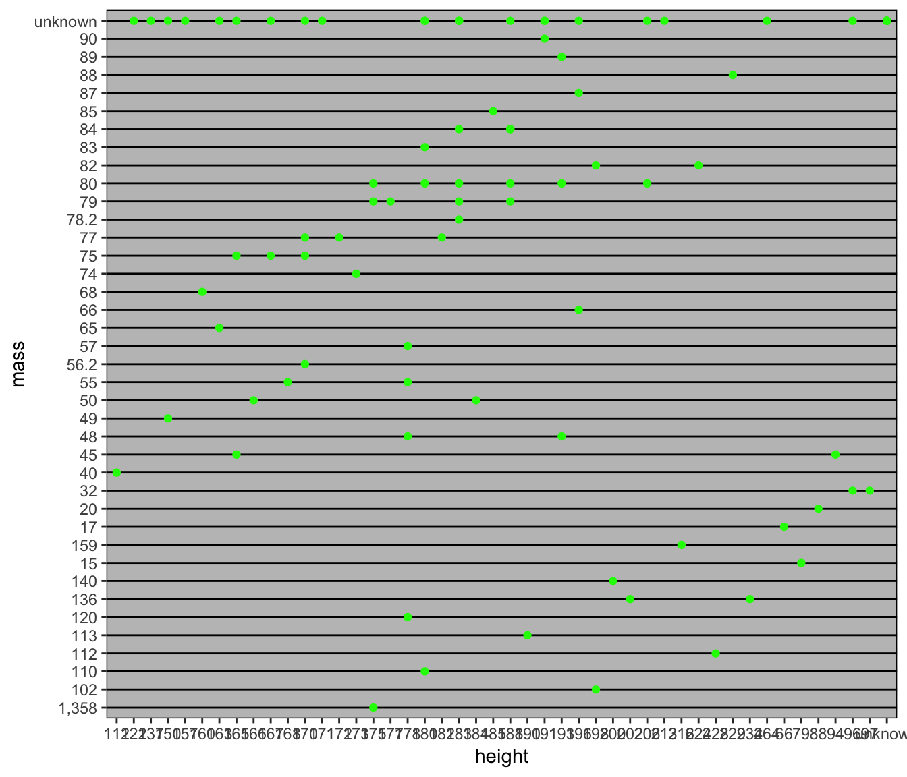
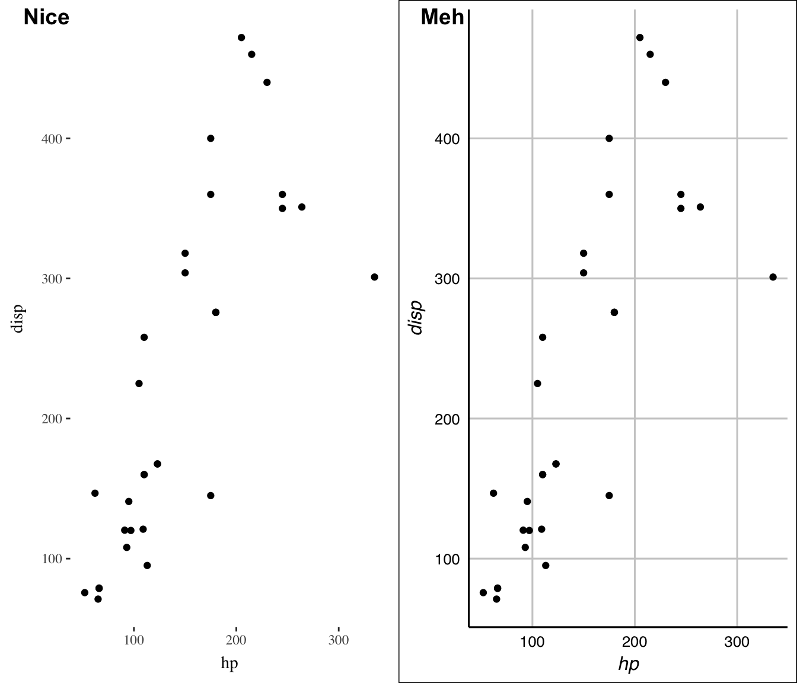
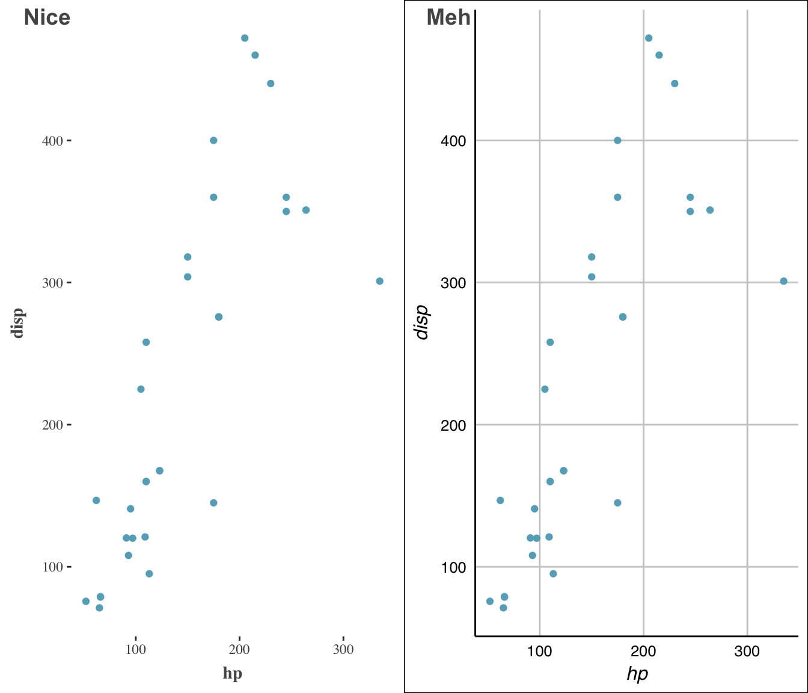
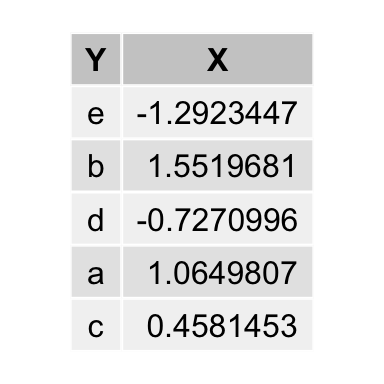

R libraries
Much of R’s popularity is due to its fantastic ecosystem. R users benefit heavily from CRAN and Bioconductor packages created by its community. For data analysis or statistics R is a good choice for various reasons:
- high-level,
- easy to install packages,
- can be extended to C++ without needing knowledge of linking or C++ build-systems,
- probably the best plotting facility with ggplot, cowplot, hrbrthemes, ggsci and others,
- Bioconductor, machine learning and statistics libraries,
- small standard library.
There are a few things, however, R is not so great at:
- in general slow,
- not really suited for large projects,
- poor object orientation,
- inconsistent function names,
- very limited threading capabilities.
For stats, data analysis and writing reports I find R still superior to Python, partly due to Rmarkdown, shiny, ggplot2 and Rcpp.
Data wrangling
Every analysis of data starts with preprocessing and parsing. For this I’ve found dplyr and tidyr tremendously useful. There are many more great tools in the tidyverse and Rstudio, such as purrr (explained later), magrittr or tibble, but these two simlify most of my work.
library(dplyr)
data(iris)
group_by(iris, Species) %>% summarize(Petal.Length = mean(Petal.Length), Sepal.Length = mean(Sepal.Length)) %>%
mutate(Species = toupper(Species))# A tibble: 3 x 3
Species Petal.Length Sepal.Length
<chr> <dbl> <dbl>
1 SETOSA 1.46 5.01
2 VERSICOLOR 4.26 5.94
3 VIRGINICA 5.55 6.59tidyr::gather(iris, Col, Val, -Species) %>% head Species Col Val
1 setosa Sepal.Length 5.1
2 setosa Sepal.Length 4.9
3 setosa Sepal.Length 4.7
4 setosa Sepal.Length 4.6
5 setosa Sepal.Length 5.0
6 setosa Sepal.Length 5.4Extending to C++ using Rcpp
Using Rcpp (and RcppEigen, RcppArmadillo, Boost) you can easily your extend your code to C++. It not only nicely wraps the standard C API, but also let’s you use standard matrix libraries such as Eigen and Armadillo or Boost.
If you have a project that’s not a package you can for instance create a function like this:
Rcpp::cppFunction("double sum(std::vector<double>& vec) {
double sum = .0;
for (std::vector<double>::size_type i = 0; i < vec.size(); ++i)
sum += vec[i];
return sum;
}")
sum(as.numeric(seq(10)))[1] 55Let’s have a look at an Eigen example with sourceCpp:
cat ./square.cpp// [[Rcpp::depends(RcppEigen)]]
#include <RcppEigen.h>
// [[Rcpp::export]]
Eigen::MatrixXd square(Eigen::MatrixXd& m)
{
return m.transpose() * m;
}library("RcppEigen")
Rcpp::sourceCpp("./square.cpp")
square(matrix(rnorm(10), 2)) [,1] [,2] [,3] [,4] [,5]
[1,] 3.9154172 -2.399031 3.124316 -1.158573 -0.9522277
[2,] -2.3990312 2.412661 -2.510712 1.753117 2.2633663
[3,] 3.1243161 -2.510712 2.870351 -1.584465 -1.8225898
[4,] -1.1585735 1.753117 -1.584465 1.497280 2.1407760
[5,] -0.9522277 2.263366 -1.822590 2.140776 3.2251294Even for small matrices, the speed up is already substantial.
m <- matrix(rnorm(100 * 100), 100)
microbenchmark::microbenchmark(square(m), t(m) %*% m)Unit: microseconds
expr min lq mean median uq max neval cld
square(m) 220.188 329.535 516.6047 420.7075 517.308 3315.429 100 a
t(m) %*% m 647.199 806.076 1237.3398 939.7165 1352.623 5522.402 100 bRcpp in a package
Usually, you would want to put your source code into a cpp file in the src folder. Then you can call C++ from an R function, for instance as described below.
- Define a C++ source file and put it in
src, like this:
#include <Rcpp.h>
// [[Rcpp::export]]
Rcpp::List dostuff()
{
// some computations
return Rcpp::List::create(
Rcpp::Named("a") = ...
);
}- Add this to your
DESCRIPTION:
Imports: Rcpp
LinkingTo: RcppAdd a comment
#' @useDynLib newpkg, .registration = TRUEto the documentation of any function, better yet to the package doc.Call
devtools::document()Call
Rcpp::compileAttributes("./newpkg")
This should let you access the C++ function from your package. For more details check out the main documentation or some of my packages, like netReg or datastructures. The latter also has an example how to use modules and Boost.
Writing C++
Here are some tools that help you develop your code:
- gdb and lldb for debugging,
- valgrind and gprof to check for memory leaks and for profiling,
- Intel’s Parallel Studio XE (<3) which is a toolbox for vectorization, debugging, memory checks, etc. If you can get hold of it, get it. It is magnificent.
- Boost for unit tests, data structures and basically everything you ever need,
- cppcheck for static code analysis,
- doxygen for code documentation.
Many C++ libraries, like Dlib, Eigen or tensorflow have an R interface, so before implementing functionality yourself check out if there is already an implementation for it.
At this point it also makes sense to have a look at various C++ books such as
- Scott Meyers: Effective Modern C++,
- Scott Meyers: Effective C++,
- Ben Klemens: 21. century C,
- Kurt Guntheroth: Optimized C++,
- Nicolai Josuttis: C++17 - the complete guide,
- David Vandevoorde: C++ Templates - the compete guide.
For fast numerical code OpenMP and advanced vector and streaming SIMD extensions (AVX/SSE) is often the way to go. Writing good code using AVX is however not very simple and knowledge of memory alignment is required. However, starting from version 4 (?), OpenMP easily allows vectorization using #pragma simd.
Note: the last lines in this section are heavily subjective and only state the author’s opinion. More and more garbage code is forced onto the scientific community, mostly related to academic hubris and lack of knowledge about how to program* (we don’t mean how to accomplish a task using a programming language, but to embrace a language and its philosophy at its very core). If you aim to publish your code, make sure it follows contemporary good practices, standards and guidelines and that it is consistent, for instance by following people’s code who are part of the community for ages. At this point we want to emphasize that the author doesn’t claim to know C++, but rather that he is annoyed by this very trend.*
C++ is a large, complex language. Chances that you mess up, introduce bugs and memory leaks are high, unless you have some experience. In academia in mostly results in bad, un-maintainable code. If your argument is but it is faster than R, at least have a look at Fortran, Julia or Python (and numpy). If you still prefer hacking in C++ try to stick to some guidelines:
- don’t include C headers in your C++ projects .. just don’t. C and C++ are two languages. There is for need for
FILE*ormalloc. - modern C++ rarely needs pointers. Use
std::vectororstd::unique_ptr. No need to manually release pointers is an advantage of itself. - BOOST has (probably) everything you will ever need. Don’t reinvent the wheel and learn to include libraries in your project.
- Learn how to use Cmake, Meson or autotools. You should never need to directly invoke a compiler or write a hard-coded Makefile.
- Only because you have a PhD or M. Sc. in CS does not make you a prolific programmer. It requires staying up to date, reading other people’s code and embracing of new ideas and the very philosophy of the language and its community.
- Print warnings. They are usually there for a reason.
- Start a toy project or contribute to OSS projects.
Functional programming
purrr is a functional programming toolkit, much like the apply class of functions. However, purrr does so in a more unified way with consistent return values. Furthermore, in combination with magrittr, the code you write is naturally more concise and easier to read.
library("purrr")
library("ggplot2")
library("repurrrsive")
library("magrittr")
utils::head(sw_people[[1]])$name
[1] "Luke Skywalker"
$height
[1] "172"
$mass
[1] "77"
$hair_color
[1] "blond"
$skin_color
[1] "fair"
$eye_color
[1] "blue"df <- map_dfr(sw_people, .f = function(.) data.frame(color = .[["eye_color"]],
height = .[["height"]], mass = .[["mass"]]))
utils::head(df) color height mass
1 blue 172 77
2 yellow 167 75
3 red 96 32
4 yellow 202 136
5 brown 150 49
6 blue 178 120Plotting
One of the most significant reasons to use R is probably its plotting capabilities and people contributing to ggplot2 and the community’s effort of adding package that integrate with it. Some nice packages for plotting are the following:
hrbrthemesggthemescowplotggpubrggthemrggsciviridisandviridisLitecolorspaceandcolorblindrhighcharterpatchworkanimationplotlylatticemagickimagerscalestweenrggraph,ggnetandggnetworkgganimateandanimattion
Layout
Use hrbrthemes for a nicer layout:
library("hrbrthemes")
library("ggsci")
import_roboto_condensed()
g <- ggplot(df) + geom_point(aes(x = height, y = mass, color = color)) + hrbrthemes::theme_ipsum_rc() +
ggsci::scale_color_rickandmorty()
print(g)
Recently I started changing to simpler layouts and themes, for instance as described on Tufte in R. ggthemes offers some nice options to do so. For instance, if you are feeling jealous that you cannot draft some Excel plots, cause you are working with R:
library("ggthemes")
g <- ggplot(df) + geom_point(aes(x = height, y = mass), color = "green") + ggthemes::theme_excel()
print(g)
Publication ready plots
cowplot and ggpubr are great for greating publication ready plots:
p1 <- ggplot(mtcars, aes(hp, disp)) + geom_point() + ggthemes::theme_tufte()
p2 <- ggplot(mtcars, aes(hp, disp)) + geom_point() + ggthemes::theme_gdocs()
cowplot::plot_grid(p1, p2, ncol = 2, align = "vh", labels = c("Nice", "Meh"))
If these two are still not enough, I usually go with patchwork:
library(patchwork)
g + (p1 + p2) + plot_layout(ncol = 1)
Colors
I use colorspace and colorblindr in order to remove some hue and chroma. viridis is a wonderful set of colors for continuous, sequential data. For discrete, qualitative data I mainly use ggthemr and the fresh colors. ggsci also has some wonderful color palettes. scales lets you have a look at a color palette easily.
library("colorspace")
library("colorblindr")
library("viridis")
library("ggthemr")
library("scales")
library("cowplot")
ggthemr::ggthemr("fresh", "scientific", spacing = 2, type = "inner")
p1 <- colorblindr::gg_color_gradient() + colorspace::scale_fill_continuous_sequential("viridis",
c1 = 20, c2 = 70, l1 = 25, l2 = 100)
p2 <- colorblindr::gg_color_gradient() + colorspace::scale_fill_continuous_sequential("Blues",
c1 = 20, c2 = 70, l1 = 25, l2 = 100)
p3 <- colorblindr::gg_color_gradient() + colorspace::scale_fill_continuous_diverging(c1 = 40)
df <- data.frame(Col = ggthemr::swatch()[1:10], X = 1, Y = seq(10))
p4 <- ggplot(df) + geom_tile(aes(x = Y, y = X), fill = df$Col) + theme_void()
cowplot::plot_grid(p1, p2, p3, p4, ncol = 2, align = "vh")
Another great tool is swatches:
library(swatches)
omega_nebula <- read_ase(system.file("palettes", "omega_nebula.ase", package = "swatches"))
show_palette(omega_nebula)
Interactive and animated plots
Often you want to create an interactive plot, for instance when serving on a shiny instance. One way to do that is using plotly:
library("plotly")
q <- qplot(data = iris, x = Sepal.Length, y = Sepal.Width, color = Species) +
ggthemes::theme_tufte()
plotly::ggplotly(q)Recently I also stumbled upon highcharter and ggvis:
library("highcharter")
hchart(iris, "scatter", hcaes(x = Sepal.Length, y = Sepal.Width, group = Species)) %>%
hc_add_theme(hc_theme_tufte())library("ggvis")
data("mtcars")
mtcars %>% ggvis(~wt, ~mpg, `:=`(size, input_slider(10, 100)), `:=`(opacity,
input_slider(0, 1))) %>% layer_points()With gganimate you can directly create GIFs from you plots:
library("gganimate")
library("gapminder")
g <- ggplot(gapminder, aes(gdpPercap, lifeExp, size = pop, frame = year)) +
geom_point() + geom_smooth(aes(group = year), method = "lm", show.legend = FALSE) +
facet_wrap(~continent, scales = "free") + ggthemes::theme_tufte()
gganimate(g)
Graphs
There are many wonderful graph and network libraries around. I primarily use ggnetwork/ggnet2, igraph, ggraph and DiagrammeR.
library(DiagrammeR)
create_graph() %>% add_node(label = expression(Z), node_aes = node_aes(penwidth = 2,
fontname = "Arial Narrow", fontcolor = "black", fillcolor = "white", color = "black")) %>%
add_node(label = "X", node_aes = node_aes(penwidth = 2, fontname = "Arial Narrow",
fontcolor = "black", fillcolor = "grey", color = "black")) %>% add_edge(from = 1,
to = 2, edge_aes = edge_aes(color = "black")) %>% render_graph(layout = "tree")data.table
data.table is a fast implementation of R’s classical data.frame. I hardly ever use data frame any more, and if so only, because it seems to work nicer with dplyr and tidyr. However, by using dtplyr this isn’t much of a problem, really.
library("data.table")
library("dplyr")
library("dtplyr")
library("grid")
library("gridExtra")
n <- 1000
rn <- stats::rnorm(n)
ltrs <- base::sample(letters[1:5], n, replace = TRUE)
dt <- data.table::data.table(X = rn, Y = ltrs)
df <- base::data.frame(X = rn, Y = ltrs)
dt[, .SD[sample(.N, 1)], by = c("Y")] %>% tableGrob(rows = NULL) %>% grid.arrange
In the end it depends what style you prefer. I usually go with data.table alone without needing the dplyr/dtplyr dependency. However, the latter is usually more readable. For large data, the fastest solution is probably preferable.
dt.only <- function() dt[, .SD[sample(.N, 1)], by = c("Y")]
dt.dtplyr <- function() dt %>% dplyr::group_by(Y) %>% dplyr::sample_n(1)
df.dplyr <- function() df %>% dplyr::group_by(Y) %>% dplyr::sample_n(1)
microbenchmark::microbenchmark(dt.only(), dt.dtplyr(), df.dplyr())Unit: milliseconds
expr min lq mean median uq max neval
dt.only() 1.427923 1.761586 2.675787 2.127224 2.890548 27.023261 100
dt.dtplyr() 2.025227 2.548122 3.350910 2.985529 3.849531 7.747268 100
df.dplyr() 2.315759 2.879618 3.902482 3.381295 4.554877 15.261312 100
cld
a
b
bmlR and openML
CRAN offers dozens of packages related to machine and statistical learning, many of which doing the same. mlR wraps many of these into one big library. mlR integrates with openML, an open machine learning platform where people share code, data and algorithms. Here we show an example where we use a Gaussian process to predict the Kyphosis label from the gam package.
library(mlr)
task <- mlr::makeClassifTask(data = kyphosis, target = "Kyphosis")
lrn <- mlr::makeLearner("classif.gausspr")
n <- nrow(kyphosis)
train.set <- sample(n, size = 2/3 * n)
test.set <- setdiff(1:n, train.set)
model <- mlr::train(lrn, task, subset = train.set)Using automatic sigma estimation (sigest) for RBF or laplace kernel pred <- stats::predict(model, task = task, subset = test.set)
performance(pred, measures = list(mmce, acc)) mmce acc
0.1111111 0.8888889 Markdown and Shiny
Rmarkdown is a great way for documentation, reporting and working reproducibly. Rstudio provides tons of different output formats like web sites (like this one), Tufte style documents, blogs and others. If you want to present your work interactively you can do so by building a web page using shiny. For presentations that use R code I use either xaringan, Slidify or reveal.js.
Find all the output formats by Rstudio here.
Shiny
Setting up a Shiny instance for reporting is a great way to present data using interactive plots. Setting up shiny is fairly easy. You need to create a server.R file and ui.R file, e.g. like this:
cat R/ui.Rlibrary(shiny)
library(shinyjs)
library(plotly)
shinyUI(
fluidPage(
useShinyjs(),
fluidRow(
column(
width = 6,offset=2,
h3("Scatterplot"),
HTML("<h5><i>Created using ggplot2, hrbrthemes and ggsci on the iris data.</i></h5>"),
plotOutput("scatterplot", width=800)
)
)
)
) cat R/ui.Rlibrary(shiny)
library(shinyjs)
library(plotly)
shinyUI(
fluidPage(
useShinyjs(),
fluidRow(
column(
width = 6,offset=2,
h3("Scatterplot"),
HTML("<h5><i>Created using ggplot2, hrbrthemes and ggsci on the iris data.</i></h5>"),
plotOutput("scatterplot", width=800)
)
)
)
)You can publish your server on shinyapps.io so that it is accessible by everyone.
Pryr
In some cases it is interesting to have a look at the implementation of specific functions, get their sizes in byte or get the current memory consumption. It is especially useful to keep track of the addresses your objects point to. When I was new to R I found it confusing when a reference is dropped and when a new copy of an object is created.
library("pryr")
pryr::inspect(list())<VECSXP 0x7fee0b04d3f8>pryr::inspect(vector())<LGLSXP 0x7fee07f67408>pryr::object_size(numeric())40 Bpryr::object_size(numeric(1))48 Bx <- stats::rnorm(10)
y <- x
pryr::address(x)[1] "0x7fee0f475d58"pryr::address(y)[1] "0x7fee0f475d58"y[1] <- 1
pryr::address(y)[1] "0x7fee11370750"datastructures
If you have a background in computer science you may wonder, that R does not have support for advanced data structures such as Fibonacci heaps or hashmaps. datastructures tries to solve this. It uses Rcpp modules to export Boost data structures to R:
library("datastructures")
q <- datastructures::fibonacci_heap("integer", "numeric")
q[1:3] <- list(rnorm(3), 2, rnorm(4))
datastructures::pop(q)$`1`
[1] 0.9646802 0.5508726 1.3883642datastructures::pop(q)$`2`
[1] 2datastructures::pop(q)$`3`
[1] -1.5733381 0.8551432 -0.9849241 0.5447848datastructures::pop(q)NULLWorkflow management
I recently came across drake as a workflow manager. It allows you to run a project and easily update output files.

Others
There are many other great tools I did not specifically mention due to the fact that they are probably more situational. Some of these are:
- rlang
- argparse,
- IRKernel,
- CVXR, minqa and nloptr,
- tensorflow and keras,
- glmnet, lme4 and netReg.